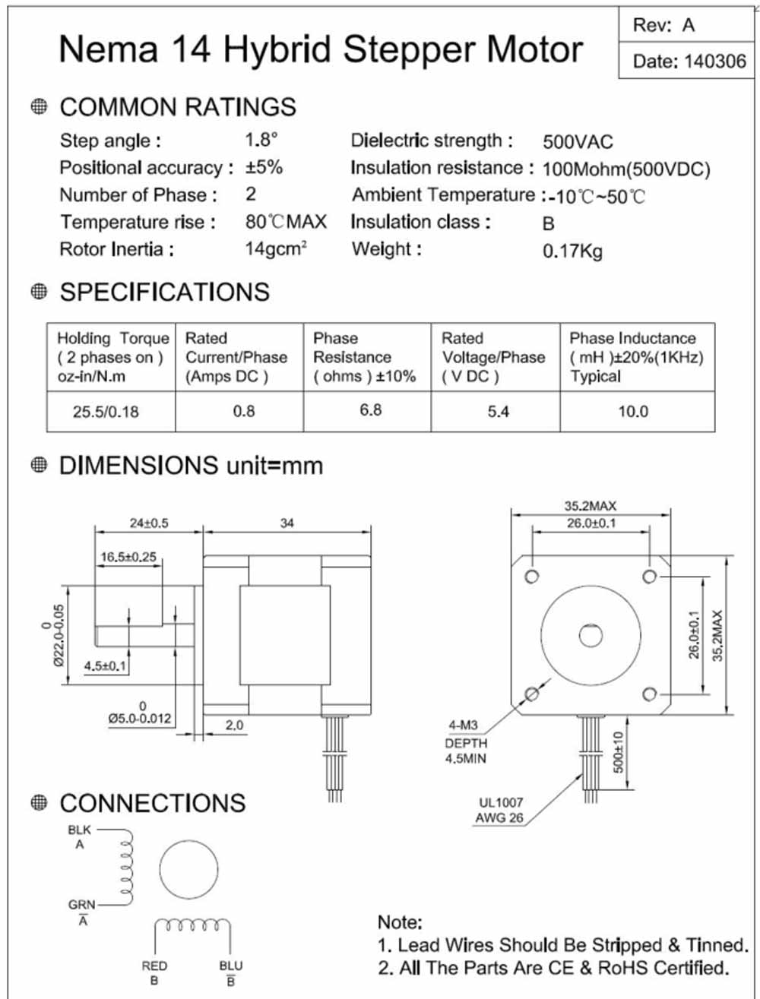
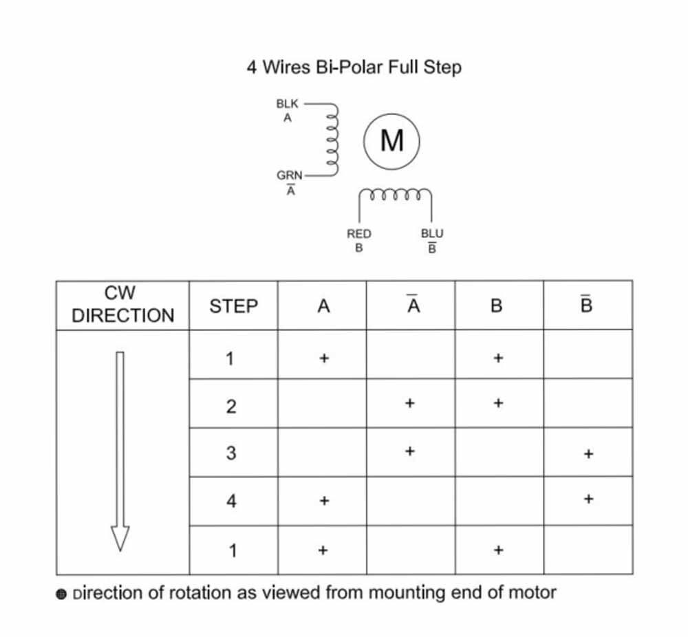
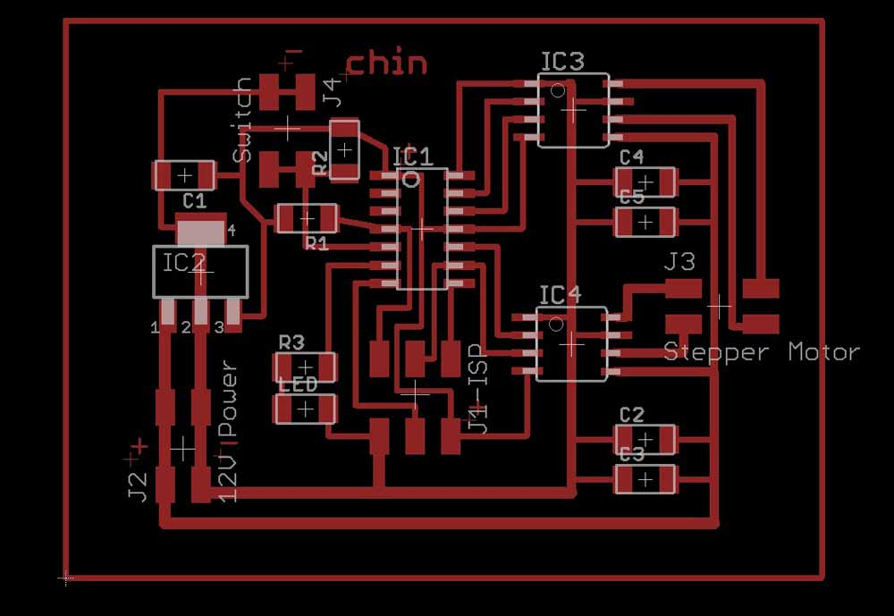
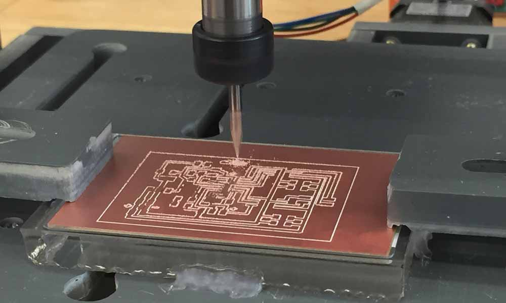
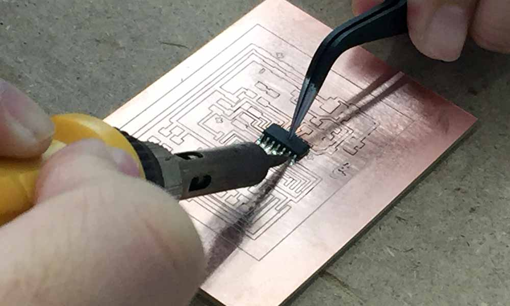
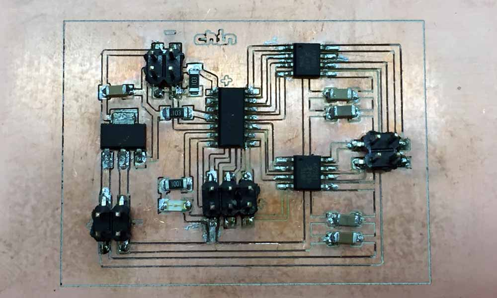

Final Project Electronics Design
Project Proposal Project Planning Project Documentation Mechanical Design Electronics Design Final Project Presentation
Choosing the Right Stepper Motor
Selecting the right motor for the project was a challenge. During the Output Devices week, I thought a servo motor would be sufficient for my project. Therefore during that week, I have chosen to study on servo motors. Then I found out I might need to use a stepper motor which has more torque. My instructor has a 28BYJ-48 which I thought would do the trick. I quickly realise that being only unipolar, the pull-in torque of a mere 300 gf/cm is not sufficient. I actually would need a more powerful bipolar stepper motor in order to perform the action of flipping a page. My instructor lent me his Nema 14HS13-0804S for this project.


Circuitry Design
I made close reference to Neil's board on output week when designing my circuitry. I could have done this component earlier at the Output Devices week if I have known that I needed a stepper motor for my project.

Component List
- 1 x 12V STEPPER MOTOR
- 1 x ATTINY44 MICROCONTROLLER
- 3 x 2x2 HEADER (POWER)
- 1 x 3X2 PIN HEADER (AVRISP & SERVO)
- 2 x CAPACITOR 10 uf
- 1 x CAPACITOR 1 uf
- 2 x CAPACITOR 0.1 uf
- 3 x 10k Ohm RESISTOR RES-US1206FAB
- 1 x 1k Ohm RESISTOR RES-US1206FAB
- 1 x 5V REGULATOR
- 1 x LED 1206 SMD
- 2 x A4950 H-BRIDGE MOTOR DRIVER
- 1 x SNAP ACTION SWITCH
The stepper motor needs at least 5.4 volts to run. A normal USB port will not supply enough power to run it. I will need either a 12Vin or a DC supply to supply the power for this project. The 5V voltage regulator is a important component here as the operating voltage of the ATtiny 44 microcontroller cannot exceed 5 volts. The regulator drops the 12Vin to a 5Vout so that the microcontroller does not burn. The datasheet of the LM2940 indicates that a 22uf capacitor is required to maintain regulator stability. However, I did not use a 22uf capacitor, but was using a 1uf capacitor. And that seemed to work alright.
As my input device is an external foot switch, I would have to design a connecting header that will receive the input signal from the switch. I also designed a LED indicator to test if my programming is working. In my schematic, I have used a 2x2 header for the switch and 12V power supply.

Electronics Production
Procedures on how to mill the circuit board have been documented in the Electronics Design week.

 
AVR Programming
The programming phase has been a real challenge to me. I have used flashed c coded into microcontroller in previous assignments, but all of those programming codes are pre-written and all I need to do is the make sure the pins tally and flash the chip, and microcontroller will perform as expected. This is different. I will need to understand the coding and be able to modify it to perform what I wanted to it to do. Basically, I need to put together the stuff I learned about hello.button.45.c from Input Devices class and hello.stepper.bipolar.44.full.c from Output devices class into one programme. I spent about a week just to read up on AVR programming using C to learn the syntax and the logic. Two resources have been extremely helpful in my study. One is Make: AVR Programming: Learning to Write Software for Hardware by Elliot Williams. This books deals with the fundamentals about how to literally think in binary terms. Now I understand what this means:
Bit Twiddling#define BV(bit) (1 << bit) #define setBit(byte, bit) (byte |= BV(bit)) // set a bit to true #define clearBit(byte, bit) (byte &= ~BV(bit)) // clearing a bit to false #define toggleBit(byte, bit) (byte ^= BV(bit)) // toggling a bit to either true or false depending on its previous state
The other resource is a youtube series: NewbieHack - Microcontroller Tutorial - A Beginners Guide which gives step-by-step tutorials on how to install winavr, how to flash microcontrollers using AVRDUDE and how to write C programmes. The author's website is NewbieHack.com. This has been most helpful to my learning of AVR programming.
Command used to flash the microchip in Command Prompt:
cd "C:\Users\yoruichin\Dropbox\FAB\Final Project Page turner\Stepper motor\" cp hello.stepper.bipolar.44.full.make makefile make avrdude -P com4 -c stk500v1 -b 19200 -p t44 -U flash:w:hello.stepper.bipolar.44.full.c.hex
Embedded Programming for Automatic Score Turner
The steps I took:
- My first step was to load Neil's C programme without any change to the microcontroller, to make sure the board works and the stepper motor can move. Successful!
- Then I modify the speed of the stepper motor by changing parameters of on_delay, off_delay and step_count. Successful!
- I proceed to test the pushbutton function. I used the arudino sketch I have made in embedded programming to see if my LED lights up at the press of the button. Successful!
- Now that I know the pushbutton circuitry is working, I know the only variable is the programme. And this is the hard part. I tried to add a if condition to the C code to listen to the input signal of my pushbutton, but there was no response. Failed!
Troubleshooting the programme
So I added a if condition to execute the stepper motor only when button is pressed. So it turned out that because I was following the book by Elliot Williams, I used the library function "bit_is_clear" without fully understanding what the arguments were. That was the reason I had a hard time trying to make the if condition work. With the help of my instructor, we finally figured out that one of the 2 arguments I used there was not a valid one. I had used "if (bit_is_clear(PORTB, PB2))" instead of "if (bit_is_clear(PINB, PB2))" which is the correct one. No wonder it did nothing. Thanks, Rodney for sitting with me for an hour to help troubleshoot my codes!
Embedded programming of the Automatic Score Turner - Sucessful!The full code for my stepper.bipolar.44.full.c
//
//
// hello.stepper.bipolar.44.full.c
//
// bipolar full stepping hello-world
//
// Neil Gershenfeld
// 11/21/12
//
// (c) Massachusetts Institute of Technology 2012
// This work may be reproduced, modified, distributed,
// performed, and displayed for any purpose. Copyright is
// retained and must be preserved. The work is provided
// as is; no warranty is provided, and users accept all
// liability.
//
// Documentation
// =============
// Modified by Yue Siew Chin, Fablab Singapore, 2016
//
// This program causes a stepper motor to turn a page at the press of a pushbutton.
// Microcontroller = ATtiny44
// Pushbutton = PB2
// LED = PA7
// Stepper motor pins = PA0, PA1, PA3, PA4 (A2, A1, B2, B1)
// Bipolar stepper motor 14HS13-0804S
// H-bridge PWM Motor Driver Allegro A4950
// 5V Regulator LM2940
#include avr/io.h //<> required to enclose the library name
#include util/delay.h //<> required to enclose the library name
#include avr/interrupt.h //<> required to enclose the library name
#define output(directions,pin) (directions |= pin) // set port direction for output
#define input(directions,pin) (directions &= (~pin)) // set port direction for input
#define set(port,pin) (port |= pin) // set port pin
#define clear(port,pin) (port &= (~pin)) // clear port pin
#define toggle(port,pin) (port ^= pin)
#define pin_test(pins,pin) (pins & pin) // test for port pin
#define bit_test(byte,bit) (byte & (1 << bit)) // test for bit set
#define bridge_port PORTA // H-bridge port
#define bridge_direction DDRA // H-bridge direction
#define A2 (1 << PA0) // H-bridge output pins
#define A1 (1 << PA1) // "
#define B2 (1 << PA3) // "
#define B1 (1 << PA4) // "
#define on_delay() _delay_us(35) // PWM on time
#define off_delay() _delay_us(15) // PWM off time
#define PWM_count 100 // number of PWM cycles
#define step_count 53 // number of steps
#define button_port PORTB
#define button_direction DDRB
#define button (1 << PB2) // set button input pin
#define led_port PORTA
#define led_direction DDRA
#define led (1 << PA7) // set LED output pin
static uint8_t count;
//
// A+ B+ PWM pulse
//
void pulse_ApBp() {
clear(bridge_port, A2);
clear(bridge_port, B2);
set(bridge_port, A1);
set(bridge_port, B1);
for (count = 0; count < PWM_count; ++count) {
set(bridge_port, A1);
set(bridge_port, B1);
on_delay();
clear(bridge_port, A1);
clear(bridge_port, B1);
off_delay();
}
}
//
// A+ B- PWM pulse
//
void pulse_ApBm() {
clear(bridge_port, A2);
clear(bridge_port, B1);
set(bridge_port, A1);
set(bridge_port, B2);
for (count = 0; count < PWM_count; ++count) {
set(bridge_port, A1);
set(bridge_port, B2);
on_delay();
clear(bridge_port, A1);
clear(bridge_port, B2);
off_delay();
}
}
//
// A- B+ PWM pulse
//
void pulse_AmBp() {
clear(bridge_port, A1);
clear(bridge_port, B2);
set(bridge_port, A2);
set(bridge_port, B1);
for (count = 0; count < PWM_count; ++count) {
set(bridge_port, A2);
set(bridge_port, B1);
on_delay();
clear(bridge_port, A2);
clear(bridge_port, B1);
off_delay();
}
}
//
// A- B- PWM pulse
//
void pulse_AmBm() {
clear(bridge_port, A1);
clear(bridge_port, B1);
set(bridge_port, A2);
set(bridge_port, B2);
for (count = 0; count < PWM_count; ++count) {
set(bridge_port, A2);
set(bridge_port, B2);
on_delay();
clear(bridge_port, A2);
clear(bridge_port, B2);
off_delay();
}
}
//
// clockwise step
//
void step_cw() {
pulse_ApBp();
pulse_AmBp();
pulse_AmBm();
pulse_ApBm();
}
//
// counter-clockwise step
//
void step_ccw() {
pulse_ApBm();
pulse_AmBm();
pulse_AmBp();
pulse_ApBp();
}
// Was intending to use a debounce function for the pushbutton but decided to comment out so as not to complicate things.
uint8_t debounce(void) { // check for button bounce
if (bit_is_clear(button_port, button)) { // button is pressed
_delay_us(1000); // debounce timeout in microseconds
if (bit_is_clear(button_port, button)) { // button is still pressed after a short delay
return (1); // return true
}
}
return (0); // otherwise return false
}
int main(void) {
//
// main
//
static uint8_t i,j;
//
// set clock divider to /1
//
CLKPR = (1 << CLKPCE);
CLKPR = (0 << CLKPS3) | (0 << CLKPS2) | (0 << CLKPS1) | (0 << CLKPS0);
//
// initialize bridge pins
//
clear(bridge_port, A1);
output(bridge_direction, A1);
clear(bridge_port, A2);
output(bridge_direction, A2);
clear(bridge_port, B1);
output(bridge_direction, B1);
clear(bridge_port, B2);
output(bridge_direction, B2);
input(button_direction, button); // clear bit
output(led_direction, led); // set bit of LED for output
set(led_port, led);
//
// main loop
//
while (1) {
if (bit_is_clear(PINB, PB2)) { // look for button press; equivalent to if ((PINB & (1 << PB2)) == 0 )
clear(led_port, led);
for (i = 0; i < step_count; ++i) {
// for (j = 0; j < i; ++j)
step_cw();
_delay_ms(10);
// stop stepper motor rotation
clear(bridge_port, A1);
clear(bridge_port, A2);
clear(bridge_port, B1);
clear(bridge_port, B2);
}
}
else {
set(led_port, led); // indicates ready to receive input
}
}
}
Download work files
- stepper.sch
- stepper.brd
- Generated milling outlines - stepper.top.etch.tap
- attinyButton3.ino
- hello.stepper.bipolar.44.full.c
- hello.stepper.bipolar.44.full.make
References
- Switch Basics
- BYJ48 Stepper Motor
- How to use a Stepper Motor
- Small Reduction Stepper Motor - 5VDC 32-Step 1/16 Gearing
- Small Reduction Stepper Motor - 12VDC 32-Step 1/16 Gearing
- Unipolar Stepper Motor vs Bipolar Stepper Motors
- Fuzz Pedal
- Overdrive Pedal
- Stepper Motors
- 28BYJ-48 Stepper Motor with ULN2003 driver and Arduino Uno
- Decoupling capacitor
- Stepper Motor Mounts
- Nema 14 Bipolar Stepper 5.4V 0.8A 18Ncm(25.5oz.in) 14HS13-0804S
- 4 Bar Linkage Kinematics
- Four-Bar Linkage and Coupler Curve
- How to Make a Folding Book Stand
- STEP MOTOR BASICS GUIDE
- Bipolar stepper motor control with Arduino and an H-Bridge
- Bipolar Stepper Motor Control with an Arduino and H-Bridge
- Bipolar Stepper Motor
- Feeding power to Arduino: the ultimate guide
- 28BYJ-48 Stepper Motor with ULN2003 driver and Arduino Uno
- Microcontrollers - AVR Atmega32 - Adding a Button to the Microcontroller
- Microcontroller - A Beginners Guide - Adding a Button to the Microcontroller and Making it Do Something
- Programming an ATtiny w/ Arduino 1.6
- Beyond the Arduino: Programming AVR Microcontrollers in C
- Make: AVR Programming: Learning to Write Software for Hardware by Elliot Williams.
- Professional Hand Soldering Basic to Advance Surface Mount, Through Hole, Wires & Terminals
- Soldering Basics - Popular Solder Connections
- NewbieHack.com - LEARN THE FUNDAMENTALS OF MECHATRONICS!
- NewbieHack - Microcontroller Tutorial - A Beginners Guide
- Static and Kinetic Friction
- end effector
- Torque